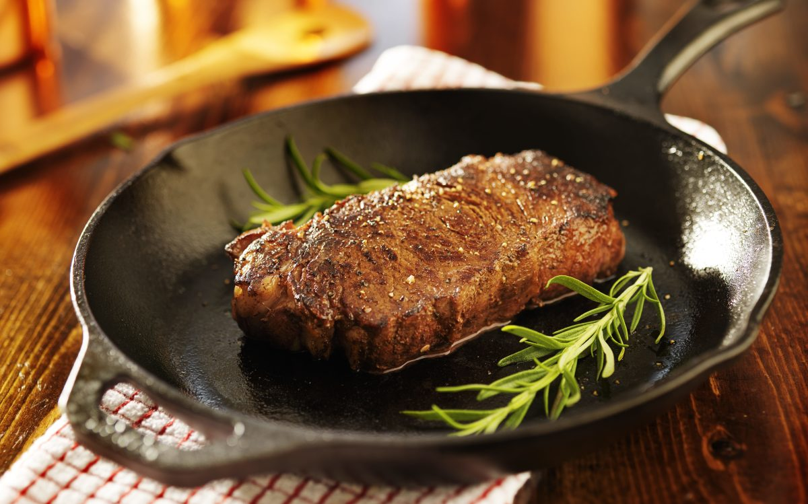

Steak Recipe

Description
Above is an image of a pan seared steak cooked to a tempurature of medium with butter
Ingredients
- Raw Steak
- Butter
- Salt
- Pepper
- Any additional seasoning of your choice
Steps
- Preheat the pan on the stovetop
- Apply salt+pepper to your steak (make sure to use a considerable amount of seasoning)
- Add any additional seasoning of your choosing
- Once the pan is hot, add some butter to the pan
- Place the steak in the pan
- Keep monitoring the steak as it cooks to ensure the temperature inside is good and it is seared properly on the outside
- Note: Flip the steak within the pan as needed and keep monitoring
- Once the steak is cooked to your preferred tempurature, take it out of the pan and let the steak rest before eating.